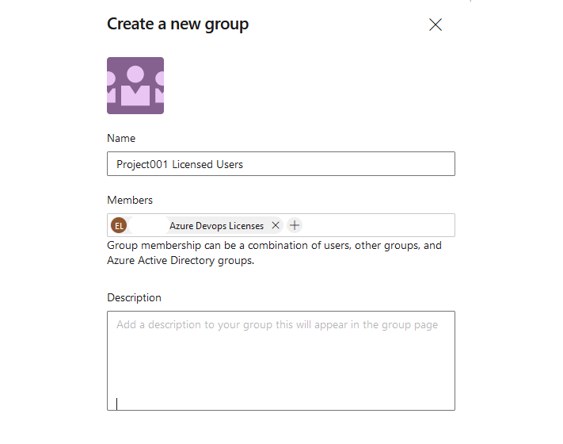
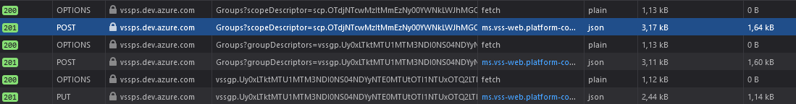

Lately I have been working on a project where I needed to automate the creation of a Azure Devops project. Each project had a couple of requirements meaning that each time the automation is run the following would be created:
This can all be accomblished by using the offical DevOps REST API.
Reading the documentation tells us how all endpoints work, but it does not provide us with information about the order of requests that should be performed when i.e. adding a AAD-security used for licensing users at the project scope
What if we could let DevOps tell us what endpoints we need to talk to for each requirement and then assemble our automation based on this information?
For authentication we will be using basic auth with username & PAT (Personal Access Token).
Wrapper classes that can be used to send HTTP requests and authenticate with devops.
import base64
import json
import logging
import requests
class HttpRequest(object):
def __init__(self, url:str, method:str, headers:dict=None, payload:dict=None):
if headers == None:
headers = {}
if payload == None:
payload = {}
self.url = url
self.method = method
self.headers = headers
self.payload = payload
@property
def http_settings(self):
return {
'url': self.url,
'method': self.method,
'headers': self.headers,
'payload': self.payload
}
class Authentication(HttpRequest):
def __init__(self, url: str = None, method: str = None, headers: dict = None, payload: dict = None):
super().__init__(url, method, headers, payload)
def init_devops(self, username, password):
"""
Create a basic authentication header used by devops
Returns a dictionary
"""
auth_string = base64.b64encode(
f'{username}:{password}'.encode()).decode()
return {
'Content-Type': 'application/json',
'Authorization': f'Basic {auth_string}',
}
class DevOps(HttpRequest):
def __init__(self, organization, username, password,
url: str = None, method: str = None, headers: dict = None, payload: dict = None):
super().__init__(url, method, headers, payload)
self.base_url = f"https://dev.azure.com/{organization}"
self.vseax_url = f"https://vsaex.dev.azure.com/{organization}"
self.vssps_url = f"https://vssps.dev.azure.com/{organization}"
self.headers = Authentication().init_devops(username, password)
In order to instantiate a single DevOps organization we use the following code
devops_credentials = {
'organization': os.getenv("DEVOPS_ORGANIZATION_NAME"),
'username': os.getenv("DEVOPS_USERNAME"),
'password': os.getenv("DEVOPS_PAT_TOKEN")
}
org = DevOps(
organization=devops_credentials['organization'],
username=devops_credentials['username'],
password=devops_credentials['password']
)
This acticle does assume that an existing DevOps organization has been created and is linked to an active Azure tenant and that an existing project already exists.
Lets focus on adding a Azure Active directory group to our devops project. By using the developer tools's networking monitor it is possible to capture the order of HTTP requests made to the DevOps API.
Adding a new group to a project from the portal looks like the following:

Figure 1
When capturing the events that occur after submitting the form the following can be observed: 
Great news! we have a complete capture ready for interpretation. Lets take a deeper look at the POST and PUT requests.
Interpretation
POST https://vssps.dev.azure.com/[orgName]/_apis/Graph/Groups?scopeDescriptor=scp.OTdjNTcwMzItMmEzNy00YWNkLWJhMGQtNzQ0YjhkNTdhY2Vh
_apis/Graph/GroupsscopeDescriptor=[theScopeDecriptorOfOurDevOpsProject]Payload
{
"displayName":"XXX Azure Devops Licenses","description":"",
"storageKey":"",
"crossProject":false,
"descriptor":"",
"restrictedVisibility":false,"specialGroupType":"Generic"
}
This endpoint adds a vssps group (seen in the Name field in figure 1) group to the project scope of our DevOps Organization.
Response:
{
...
...
descriptor: "vssgp.Uy0xLTktMTU1MTM3NDI0NS04NDYyNTE0MTUtOTI1NTUxOTQ2LTMxMjE0NDM5MTUtMjM3MTMzMzM1NC0xLTE2NDc1MDkwMTctOTAzNjA4Mzk5LTI2Nzk0NTM2NTgtODg4Mzg0MTkz"
}
POST: https://vssps.dev.azure.com/[Organization]/_apis/Graph/Groups?groupDescriptors=vssgp.Uy0xLTktMTU1MTM3NDI0NS04NDYyNTE0MTUtOTI1NTUxOTQ2LTMxMjE0NDM5MTUtMjM3MTMzMzM1NC0xLTE2NDc1MDkwMTctOTAzNjA4Mzk5LTI2Nzk0NTM2NTgtODg4Mzg0MTkz
_apis/Graph/GroupsgroupDescriptors=[groupDescriptorFromLastRequest]Payload
{
"originId":"194b296b-7f7f-4bb7-8d92-f1122e286b60","storageKey":""
}
The payload contains the objectId of the request Azure AD security group. Which is sent to a url containing a reference to the previously created group.
response
{
...
...
descriptor: "aadgp.Uy0xLTktMTU1MTM3NDI0NS0xMjA0NDAwOTY5LTI0MDI5ODY0MTMtMjE3OTQwODYxNi0zLTE3OTc4NjgzMTMtMjEzOTA3NjQyNy0yMzc1MjE3NDI2LTc3NDQwMDg2NA"
}
PUT https://vssps.dev.azure.com/[Organazation]/_apis/Graph/Memberships/aadgp.Uy0xLTktMTU1MTM3NDI0NS0xMjA0NDAwOTY5LTI0MDI5ODY0MTMtMjE3OTQwODYxNi0zLTE3OTc4NjgzMTMtMjEzOTA3NjQyNy0yMzc1MjE3NDI2LTc3NDQwMDg2NA/vssgp.Uy0xLTktMTU1MTM3NDI0NS04NDYyNTE0MTUtOTI1NTUxOTQ2LTMxMjE0NDM5MTUtMjM3MTMzMzM1NC0xLTExMjExMTIyNzctMjkxMzU0NjgxNy0yODkxODMxNzAyLTM3Nzc4MjY4OTk
__apis/Graph/MembershipsNoneNoneNeither payload nor parameters, however, we can clearly see that the url is structered in such as way that both vsspgp and aadgp descriptors are included. Occording to the Official docs this creates a so called membership between a container (our vss group) and a subject (the Azure Active Directory group).
Response:
{
containerDescriptor: "vssgp.Uy0xLTktMTU1MTM3NDI0NS04NDYyNTE0MTUtOTI1NTUxOTQ2LTMxMjE0NDM5MTUtMjM3MTMzMzM1NC0xLTExMjExMTIyNzctMjkxMzU0NjgxNy0yODkxODMxNzAyLTM3Nzc4MjY4OTk",
memberDescriptor: "aadgp.Uy0xLTktMTU1MTM3NDI0NS0xMjA0NDAwOTY5LTI0MDI5ODY0MTMtMjE3OTQwODYxNi0zLTE3OTc4NjgzMTMtMjEzOTA3NjQyNy0yMzc1MjE3NDI2LTc3NDQwMDg2NA"
}
The effect of a membership is that any members of the AAD group (which obviously would be adminstered from Azure) whould be considered a member of the VSS group in DevOps. Allowing you to control access and permissions directly from Azure (or even on-premise in a hybrid-identity setup).r
All methods below are a part of the DevOps Class showcased earlier in this article. It inherits the HttpRequest class, allowing me to set http_settings by referencing "self" attributes
We need to programatically retrieve the scopeDescriptor for our project before we can start adding groups to it. Knowing the project_id we can list its properties
class DevOps(HttpRequest):
...
...
...
def get_existing_projects(self):
existing_projects = {}
self.url = f"{self.base_url}/_apis/projects?api-version=5.0"
self.method ="GET"
submit = requests.request(**self.http_settings)
for project in submit.response["value"]:
existing_projects[project["name"]] = project["id"]
return existing_projects
def get_project_scope_descriptor(self, project_id):
self.url = f"{self.vssps_url}/_apis/graph/descriptors/{project_id}"
self.method = "GET"
self.payload = None
submit = requests.request(**self.http_settings)
return submit.response
Lets convert all three steps from the network capture to python
Adding VSS group to Project
class DevOps(HttpRequest):
...
...
...
def create_group_under_project_scope(self, scope_descriptor, group_name):
"""
Creates a new group under the scope of an existing project.
Returns a group descriptor.
"""
self.url = f'{self.vssps_url}/_apis/Graph/Groups?scopeDescriptor={scope_descriptor}&api-version=6.0-preview.1'
self.method = "POST"
self.payload = json.dumps(
{
"displayName": group_name,
"description": "",
"storageKey": "",
"crossProject": False,
"descriptor": "",
"restrictedVisibility": False,
"specialGroupType":"Generic"
}
)
submit = requests.request(**self.http_settings)
return submit.response
Adding Azure AD group to DevOps
class DevOps(HttpRequest):
...
...
...
def add_aad_group_to_devops(self, group_descriptor, aad_group_oid):
"""
Add an existing AAD group from linked tenant to the global devops scope
"""
self.url = f"{self.vssps_url}/_apis/Graph/Groups?groupDescriptors={group_descriptor}&api-version=6.0-preview.1"
self.method = "POST"
self.payload = json.dumps(
{
"originId": f"{aad_group_oid}"
}
)
submit = requests.request(**self.http_settings)
return submit.response
Create a membership between AAD and VSS groups
class DevOps(HttpRequest):
...
...
...
def link_aad_group_with_project_group(self, aad_group_descriptor, project_group_descriptor):
"""
Put an existing devops group of type "aad" into an existing project group
"""
self.url = f"{self.vssps_url}/_apis/Graph/Memberships/{aad_group_descriptor}/{project_group_descriptor}?api-version=6.0-preview.1"
self.method = "PUT"
self.payload = None
submit = requests.request(**self.http_settings)
return submit.response
class DevOps(HttpRequest):
...
...
...
def add_aad_group_to_project(self, aad_group_oid:str, aad_group_name:str, project_id:str):
"""
Creates a new group inside a DevOps project from args. Steps:
1. Retrieve the project scope descriptor based on project_id
1. Add a vssp group to project
2. Add aad group to devops
3. Create membership between AAD and VSS group
"""
project_scope_descriptor = self.get_project_scope_descriptor(project_id)['value']
project_group_descriptor = self.create_group_under_project_scope(
scope_descriptor=project_scope_descriptor,
group_name=aad_group_name
)['descriptor']
aad_group_descriptor = self.add_aad_group_to_devops(
aad_group_oid=aad_group_oid,
group_descriptor=project_group_descriptor
)['descriptor']
self.link_aad_group_with_project_group(
aad_group_descriptor=aad_group_descriptor,
project_group_descriptor=project_group_descriptor
)
devops_credentials = {
'organization': os.getenv("DEVOPS_ORGANIZATION_NAME"),
'username': os.getenv("DEVOPS_USERNAME"),
'password': os.getenv("DEVOPS_PAT_TOKEN")
}
org = DevOps(
organization=devops_credentials['organization'],
username=devops_credentials['username'],
password=devops_credentials['password']
)
project_id = org.get_existing_projects()["Project001"]
# Create a new licensing group
org.add_aad_group_to_project(
aad_group_oid="194b296b-7f7f-4bb7-8d92-f1122e286b60",
aad_group_name="Project001 Licensed Users",
project_id=project_id
)
All code could of cource be much fewer rows in size but I think its nice to have many methods. This allows the code to be a bit more self-documenting and troubleshooting can be narrowed down to a single block of code.
Anyways, I can now add Azure security groups directly from a FunctionApp with a webhook trigger, or directly from CLI!
For anyone that wants to extend the automation, it is also possible to create the Azure AD security groups programmatically via the Azure Graph API.
Thanks for reading!